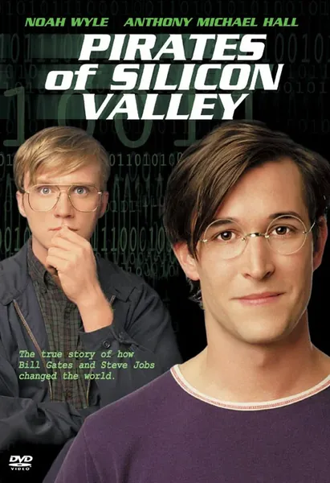

Фильм · 1999 · Драма, История
Телефильм, рассказывающий историю зарождения персонального компьютера: от гаража Джобса и Возняка до момента, когда Microsoft перехватила идею графического интерфейса. Джобс здесь предстает как визионер и тиран, Гейтс — как расчетливый переговорщик, а вся индустрия — как гонка, в которой побеждает не тот, кто изобрел, а тот, кто первым сумел продать. Один из лучших исторических фильмов об IT: ясный, живой, лишенный слепого преклонения перед героями. Идеальная отправная точка для знакомства с историей Кремниевой долины.
A made-for-TV chronicle of the personal computer's birth: from the garage of Jobs and Wozniak to Microsoft intercepting the graphical interface idea. Jobs here is a visionary and a tyrant, Gates a calculating negotiator, and the whole industry a race where the winner is not the one who invented but the one who sold first. One of the best historical films about IT: clear, lively, without hero worship. A perfect entry point into Silicon Valley history.
← Вернуться в каталог IT Movies